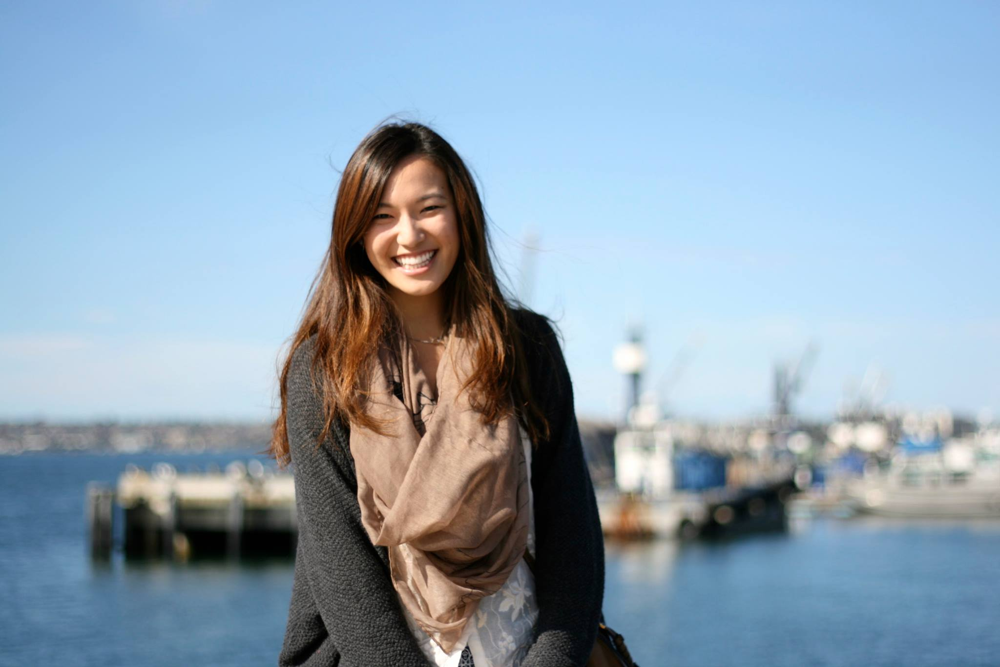

Michelle Wang is an undergraduate student in the Cognitive Science Department studying Human Computer Interaction and Business at the University of California, San Diego. She plans on graduating in 2015. Currently, she is a research assistant in an Electrophysiology Lab demonstrating her passion for research on the human brain. She is an artist and an aspiring interaction designer and user experience researcher.She enjoys creating user-friendly products to encourage a positive lifestyle and habit.
When she's not in school, she is actively involved in student government as a campus-wide senator on council and the Chief of Staff for the Office of Student Services. She also manages the budget and finance for her fraternity, Kappa Alpha Theta, as the Chief Financial Officer. When she has free time, she likes to hike around the greater area of San Diego and try new and hip restaurants. Her favorite food is the acai bowl, which is healthy and delicious!
Michelle currently lives in La Jolla, San Diego where she is attending school. She was born and raised in the Bay Area--a small town called Saratoga--where she intends on returning to work and raise a family one day!!
